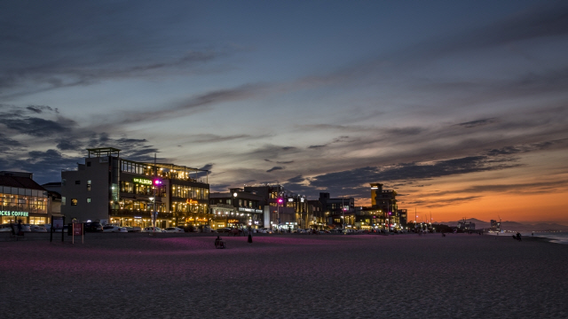

백사장 규모는 길이 500m, 면적 20,000㎡이며 가족 단위 피서지로 적합하다. 앞바다에는 바위가 많고 바다 속 풍경이 아름다워 스킨스쿠버 동호회 등의 많은 사람들이 찾는다.
해수욕장 바로 옆에는 강릉항(안목항)이 있어 낚시꾼들이 고등어, 황어, 숭어, 노래미 등을 낚고, 횟집도 많아 싱싱한 회를 즐길 수 있다. 최근 이곳은 다양한 커피를 저렴하게 즐길 수 있는 커피 거리로도 유명하다.
숙박시설, 탈의장, 샤워장, 주차장 등의 편의시설을 갖추고 있다.